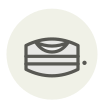

Serra da Estrela ✦
Queijo Serra da Estrela
| Nom latin | Queijo Serra da Estrela DOP |
|---|---|
| Famille | Laitages & œufs |
| Origine | Serra da Estrela, Portugal |
| Saison | novembre – mars |
| Goût | Crémeux · Riche · Acidulé · Herbacé |
| Prix courant | 28–45 €/kg |
Ce que c’est
Le caillé n'est pas pris à la présure animale mais à un extrait de fleurs de cardon séchées, un chardon sauvage cueilli sur la montagne ; l'enzyme travaille autrement et laisse une pâte presque coulante. La fabrication court de novembre à mars, quand les brebis bordaleiras sont en lait et que le froid tient le fromage.
En cuisine
Ne le coupez pas en parts. Découpez le dessus de la croûte comme un couvercle, cuillerez la pâte sur du pain, puis remettez le couvercle : le fromage se conserve plusieurs jours dans sa propre croûte.
S’accorde avec
Huile d’olive Miel Coing Noix Poire Porto ruby Figue Poivre noir
De saison en même temps
Foie de lotte (ankimo) Laitance de fugu Fromage de chèvre Laitance de hareng Mont d’Or (vacherin du Haut-Doubs) Pélardon
Une erreur ici, ou un oubli ? Dites-le nous